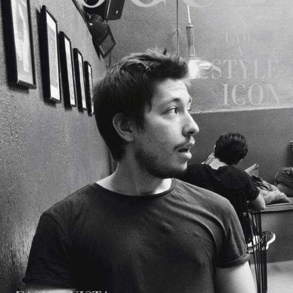

Hi I'm Furkan
Software Developer
A passionate Full Stack Web Developer who has experience building applications with JavaScript / Nodejs / Python / Java

A passionate Full Stack Web Developer who has experience building applications with JavaScript / Nodejs / Python / Java
